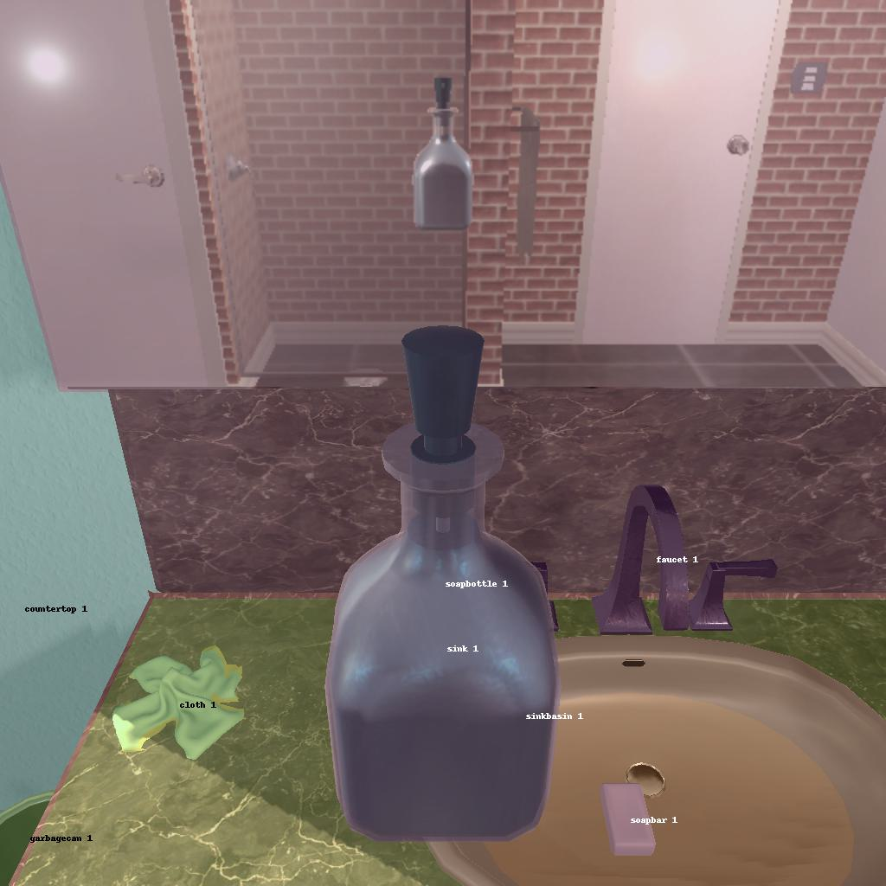
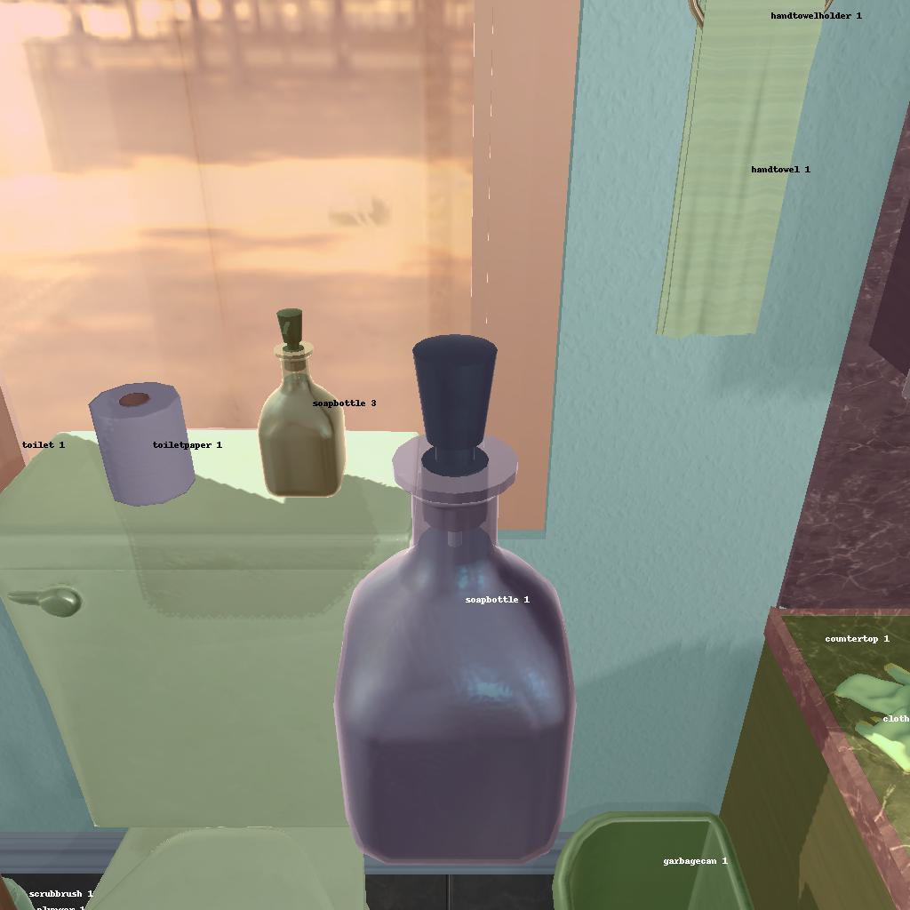

---------------------------------------------------------task: 27---------------------------------------------------------
--------------------------------------------------------------------------------------------------------------------------------------------------------------------
--------------------------------------------------------------------------------------------------------------------------------------------------------------------
Step:--------------------------------------------------------------------------11-------------------------------------------------------------------------------
----------------------------------------
VLM Prompt:
Image1:
Image2:
Image3:
**Instruction**
1. Analyze the provided image to identify all visible household objects, focusing on those relevant to the task description "find two soapbottle and put them in garbagecan."
2. Use the analysis of the image and the task hint "The agent must find an object of the desired type, pick it up, find the correct location to place it, put it down there, then look for another object of the desired type, pick it up, return to previous location, and put it down there with the other object." to answer the question: what is the most reasonable action in the choices for the task description "find two soapbottle and put them in garbagecan"?
4. Decide and write the answer using the template: The answer is: (i): , where i is the real number. If there is no desired object in the image, search every place based on **Initial Observation** to find the object. And if no one is exactly correct, choose a similar answer.
**Initial Observation**
You are in the middle of a room. Looking quickly around you, you can see countertop (1), sinkbasin (1-2), sink (1-2), garbagecan (1), drawer (1-2), toilet (1), handtowelholder (1)
**Answer Choices**
(1): go to sinkbasin 1
(2): go to drawer 1
(3): go to drawer 2
(4): go to sink 2
(5): go to sinkbasin 2
(6): go to toilet 1
(7): go to handtowelholder 1
(8): put soapbottle 1 in/on sink 1
(9): clean soapbottle 1 with sinkbasin 1
(10): clean soapbottle 1 with sink 1
(11): clean soapbottle 1 with sink 2
(12): clean soapbottle 1 with sinkbasin 2
(13): examine soapbottle 1
(14): examine sink 1
**Answer**
Let's think step by step by following the instructions.
----------------------------------------
----------------------------------------
Original Response:
First, we need to find two soapbottles. In the images provided, we can see soapbottle 1 in image 1 and soapbottle 3 in image 2. The task requires us to put them in garbagecan 1. The garbagecan is not visible in the images, but based on the initial observation, we know there is one garbagecan in the room.
The most reasonable action to complete this task would be to pick up the soapbottles and put them in the garbagecan. However, none of the answer choices directly state picking up the soapbottles or putting them in the garbagecan. The closest actions related to the soapbottles would be to "examine soapbottle 1" or "go to sinkbasin 1" or "go to sinkbasin 2" where the soapbottles are located near.
Since "examine soapbottle 1" doesn't imply any interaction that progresses the task of moving the bottles, and the goal is to eventually move them to the garbagecan, the best option is to go to the location of a soapbottle in preparation to pick it up.
Therefore, the answer is: (1): go to sinkbasin 1, where soapbottle 1 is located. This action will bring the agent closer to one of the soapbottles, which is the first step in completing the task.
----------------------------------------
----------------------------------------
>>> Refine Original VLM Response and Get Pure Action: No action
----------------------------------------
-----------------------------------------------------------------
Running time: 21.034024238586426 seconds
Total Money: 17.60703
-----------------------------------------------------------------
-----------------------------------------------------------------
Text Observation:Nothing happens.
-----------------------------------------------------------------
UNSUCCEED